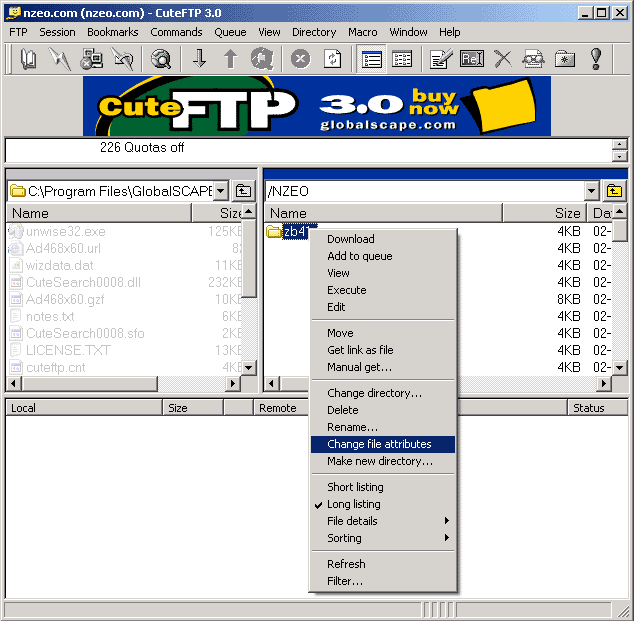
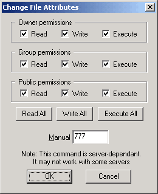
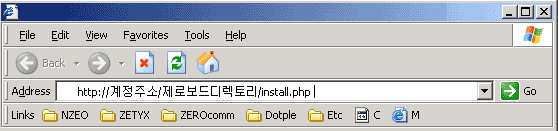
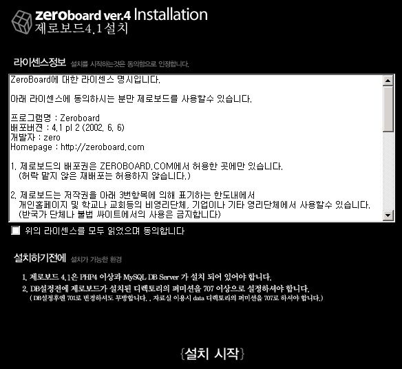
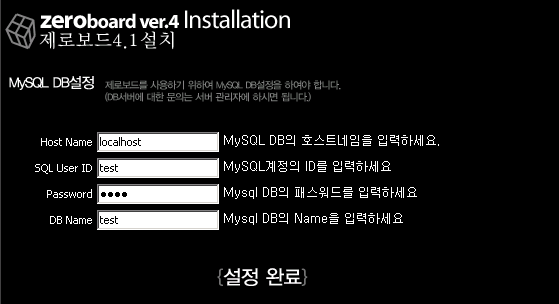
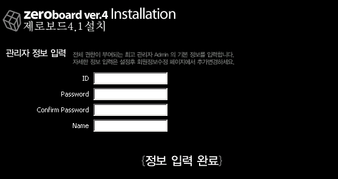

|
제로보드 설치하기 이제 제로보드를 자신의 계정에 직접 설치를 하여 봅시다. 우선 http://zeroboard.com 에서 제로보드를 다운 받으셔야겠지요? 제로보드는 .zip 파일과 .tar.Z 파일 2가지로 배포하고 있습니다. 리눅스에서 쉘명령어를 아시는 분은 .tar.Z 파일을 받아서 계정에 올린후 압축을 푸는것이 쉽습니다. 쉘명령어를 모르시는 분들을 대상으로 설명 하도록 하겠습니다. 1. 다운 받은 제로보드 zip 파일의 압축을 푸세요. 1. 압축을 풀면 bbs 이라는 디렉토리가 생성이 됩니다. 2. bbs 디렉토리를 자신의 계정으로 업로드를 합니다. 2. 업로드는 FTP 프로그램을 이용하시면 됩니다. 3. FTP에서 bbs 의 디렉토리의 퍼미션을 777로 설정합니다. 3. 저는 CuteFTP 를 이용하기 때문에 CuteFTP로 예를 들도록 하겠습니다. 3. 아래 그림을 보시면 bbs 디렉토리에 왼쪽 버튼을 클릭하였을 경우 Change file attributes 라는 3. 메뉴가 있습니다. 3. 물론 각 FTP 프로그램마다 용어가 다를수 있지만 대동소이 하니 잘 찾아보세요. ^^  3. 이 메뉴를 클릭하면 다음과 같은 그림이 나타납니다.  3. CuteFTP는 위와 같이 체크를 하거나 직접 입력할수 있게 되어 있습니다. 3. 체크하는 방식이든 숫자를 입력하는 방식이든 모두 체크하거나 777로 입력하세요. 3. 여기 까지 되었다면 반은 성공한것입니다. 4. 이제 제로보드를 설치하여 보겠습니다. 4. 제로보드의 install.php 를 실행하여 제로보드 설치를 시작합니다. 4. 아래 그림처럼 브라우저를 여시고 제로보드의 install.php 부르세요. 4. http://자신의계정도메인/제로보드디렉토리/install.php 라고 하시면 됩니다.  4. 위의 방법으로 입력하였을때 다음과 같은 화면이 나타납니다.  4. 만약 위와 같이 {설치 시작} 버튼이 나타나지 않고 아래와 같은 표시가 나타난다면 퍼미션을 4. 제대로 지정해야 합니다. 4. {설치 시작} 버튼이 나타났다면 버튼을 눌러서 설치를 시작합니다. 5. MySQL DB 설정 하기 5. 다음 페이지로 이동하면 아래와 같이 MySQL DB 를 설정하는 화면이 나옵니다.  5. 계정에서 MySQLl을 지원하면 이미 HostName, SQL UserID, Password, DB Name을 알고 있으실겁니다. 5. 만약 내가 속해 있는 계정에는 이런 것에 대해서 언급이 없었다면 지원을 하지 않는 경우일테니 5. 서버 관리자나 계정 담당자에게 확인을 하시기 바랍니다. 5. 그럼 위의 MySQL DB 정보를 입력하고 {설정 완료} 버튼을 누르세요. 6. 최고 관리자 정보 입력하기 6. MySQL DB 입력이 정상적으로 이루어졌다면 아래와 같이 기본으로 이용될 최고 관리자 정보 입력화면이 나옵니다.  6. 관리자로 사용을 원하시는 ID, 비밀번호, 이름을 입력하시고 {정보 입력 완료} 버튼을 누르세요. 6. 지금 입력하시는 관리자 ID는 계속 사용해야 하며, 분실시 관리자 화면으로 들어 갈수 없으니 꼭 6. 기억하셔야 합니다. 7. 설치 완료 7. 아래와 같이 제로보드 관리자의 인증을 요구하는 페이지가 나온다면 제로보드의 설치는 완료 된것입니다.  7. 조금전에 입력한 관리자 정보로 로그인을 하시면 관리자 페이지가 나타납니다. 이제 기본적인 설치는 성공하였습니다. 설치를 하신후에 setup.php 의 내용을 고쳐주셔야 합니다. 옆에 2번째 메뉴, * 설치후 확인사항 을 꼭 읽어보세요. |